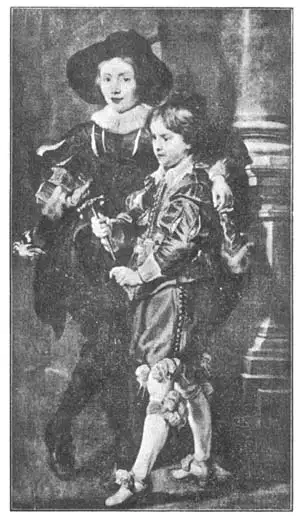
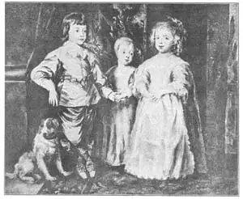

16
FLEMINGS
佛兰德斯人

DO YOU know what a Fleming is? It isn’t some strange animal you can see in the zoo. In fact, a Fleming isn’t any stranger than you are, yourself, for a Fleming is a Flemish person—a person of Flanders. The strange thing about a Fleming is that he is also bound to be either a Frenchman or a Belgian or a Dutchman, as well as just a Fleming, for Flanders is now partly in France, partly in Belgium, and partly in Holland.
An interesting thing about the Flemings is that they had great artists who were painting at the same time as the early Renaissance, or Born Again, artists in Italy. There weren’t quite so many great artists in Flanders as in Italy at that time, but there were many more there than in any other country. If you want to look up this country of Flanders on the map, look for Belgium. You will find it along the North Sea.
The first of the famous Flemish artists were two brothers named Van Eyck. Hubert was the older brother and Jan the younger. They worked in the city of Bruges, which is not a very important city now but then was one of the largest and richest cities in Europe. For a church in Ghent these two brothers painted a magnificent altar-piece. An altar-piece was not like an ordinary picture. An altar-piece had a central panel with wings or shutters on each side. like a threefold screen. These shutters could be closed like the shutters of a window and so the Van Eycks painted pictures on the back as well as on the front.
Hubert was the one who planned the paintings on this altar-piece, but before he had finished them all he died, and then Jan completed the work. The altar-piece was so much admired that several cities wanted it for their museums. So it was taken apart and for a long time the central part was in one city and each of the shutters in another. After World War I the pieces were brought back to Ghen, to make a complete altar-piece again.
The altar-piece is almost all we have to show us how good an artist Hubert Van Eyck was, but Jan’s paintings have been better preserved and there are several very famous ones in museums. Both the Van Eycks painted with oil, and they used oil so well to bring out the colors and to keep the paintings fresh-looking that the story soon grew up that they were the inventors of oil paintings. This isn’t exactly true, but they did improve oil painting so much that we can call them the fathers of oil painting. From them the Italians learned to paint with oil.
The Van Eyck brothers were followed by other good painters in Flanders, but I’m going to have to skip them and tell you about the greatest Flemish artist, who lived two hundred years later than the Van Eycks. So that you’ll know the time this was, I’ll tell you that he lived from 1577 to 1640. His name was Peter Paul Rubens.
Peter Paul must have been a very bright boy, for he learned to speak Latin, French, Italian, Spanish, English, German, and Dutch! Do you know anybody who can speak seven languages?
As a young man Peter Paul worked for several years in Italy, for one of the dukes there. The duke liked his work so much that he would not give Rubens permission to leave. One day, however, Rubens had a message from Flanders telling him his mother was very ill. He started for home at once without waiting to get the duke’s permission.
The rulers of Flanders were glad Rubens had come back and they not only gave him orders for pictures but made good use of him in other ways. He was entrusted with important missions to carry out in Spain, in France, and in England. Every place he went he won friends. The King of Spain made him a knight. The King of England made him a knight. Honors were heaped upon him. He continued to paint hundreds of pictures. In his house was a huge studio, where he had many young artists helping him as they themselves learned from him. He liked to paint big pictures best and the stairway of his studio was made very large so that his largest paintings could be taken from the studio after they were painted.
Rubens is noted for the rich, bright colors of his paintings. He could paint all kinds of pictures—portraits and landscapes, animals and battles, religious pictures and pictures of mythology and history. Some are so full of action they make you excited just to look at them. “The Lion Hunt” is one of the exciting ones. It shows men on horseback with spears, attacking lions, and the picture quickly shows yon hunting lions is not a sport for weaklings. Rubens learned to draw lions by hiring a real live lion for a model.

No.16-1 RUBENS’S SONS（《鲁本斯的儿子》）
RUBENS（鲁本斯 作）
Like most painters of his time, Rubens didn’t mind painting people of the past in the same kind of clothes as people wore in his day in Flanders. No one then seemed to think it was peculiar to see a painting of an ancient Greek in the costume of the Flemings of the seventeenth century, but painters nowadays always try to have their figures wear clothes that would have been worn at the time the figures were supposed to have lived.
Many people consider Rubens’s masterpiece to be “The Descent from the Cross.” It shows Christ’s followers removing His dead body from the cross on which He died. It is in the cathedral at Antwerp, in Belgium.
A picture every one likes is the painting Rubens did of his two sons. The older boy was eleven and the younger boy seven when Rubens painted their portraits. They look very lifelike, don’t they? Indeed they look very much like boys of to-day except that their clothes are not the kind boys wear now even when they are dressed up to go to a party, or to have their pictures taken.
Rubens was just the opposite from lazy. He worked hard and fast, but even then he had orders for more pictures than he could do. Sometimes he let his pupils paint parts of his pictures, to save time and also to give them practice, He was always ready to help other artists and sometimes bought their pictures only because they needed money. He even bought some of the paintings of a certain artist who had been very unfriendly to him, just because he felt sorry for him.

No. 16-2 CHILDREN OF CHARLES I（《查理一世的孩子们》） VAN DYCK（凡·戴克 作）
Rubens taught so many young men in his studio that some could hardly help becoming famous painters too. The best painter of all who studied under Rubens was Anthony Van Dyck (Van Dike). He went to England to live and painted there for the king, who knighted him for his work. Sir Anthony Van Dyck is most noted for his portraits of kings and noblemen and their families, but he also painted many good religious pictures. Here is Van Dyck’s painting of the Children of Charles I of England.
Sir Anthony Van Dyck became so famous at painting portraits of noblemen who almost all wore small pointed beards that even now we call a pointed beard a Van Dyck beard.
Most of the hands in Van Dyck’s portraits are long and slender, and it is said he copied his own long and slender hands for his pictures.
I wish I had room to tell you of other Flemish painters. With only this one chapter about them you may think Flemings are not so important in the story of painting as they really are. But I must tell yon the last names of three Flemish painters who came between the time of the Van Eycks and of Rubens. They were a father and two sons and so all three have the same last name. The name is Breughel. If you can get your teacher or your mother or the librarian to show you some pictures by the Breughels, I’m pretty sure you’ll like them. I won’t tell you why, but look them up and see if you don’t. I will tell you that the Breughels’ paintings are not at all like the Italian pictures.
And now I’ve really told you of more Flemings than I expected to. Here they are:
2 Van Eycks
3 Breughels
1 Rubens
1 Van Dyck
7 Flemings
【中文阅读】
你知道佛兰德斯人是什么人吗？那可不是你在动物园里看到的某种奇怪的动物。事实上，佛兰德斯人一点都不比你奇怪，因为佛兰德斯人也是人——佛兰德斯人。但是，佛兰德斯人的奇怪之处在于：由于现在的佛兰德斯人一部分住在法国，一部分住在比利时，还有一部分住在荷兰，所以一个佛兰德斯人要么是一个法国人，要么是一个比利时人，要么就是一个荷兰人。
有趣的是，佛兰德斯人中也有伟大的画家，他们同文艺复兴早期或再生时期的意大利画家处于同一个时期。当然，那时候佛兰德斯不像意大利有那么多了不起的画家，但却比其他国家还是要多得多。如果你想在地图上找到佛兰德斯这个国家，那就 找比利时。接着，你会发现佛兰德斯正位于北海沿岸。
佛兰德斯最早出名的画家是凡·艾克两兄弟。哥哥叫休伯特，弟弟叫杨。他们在布鲁日城工作。虽然现在这座城市并不是十分重要，但在当时却是欧洲最大、最富有的城市之一。两兄弟为根特的一个教堂画了一幅富丽堂皇的祭坛装饰画。祭坛装饰画与普通绘画不同，它就像三折屏风一样，中间有一块平板，两边各有一个翼板。这些翼板能像百叶窗一样关上，所以凡·艾克兄弟将前后都画上了。
休伯特是第一个在这座祭坛上画这种画的设计人，但他还没有画完就去世了。于是，弟弟杨接替他完成工作。人们非常欣赏这幅祭坛画，几个城市都想把它收进自己的博物馆。最后，这幅画竟被四分五裂了。有很长一段时间，中间的部分在一个城市，两个翼板分别在另外的城市。第一次世界大战后，各个部分被带回根特，重新组合成一幅完整的祭坛画。
这幅祭坛画几乎是我们所拥有的唯一能证明休伯特·凡·艾克是一位优秀画家的作品。而杨的作品得以更好地保存，有好几幅名画收藏在博物馆里。凡·艾克兄弟俩都用油彩绘画。他们擅常运用油彩，画的色彩十分抢眼，画面看起来就像刚创作时一样鲜亮。于是，很快有传言说他们是油画的鼻祖。这种说法并不完全正确，但是他们的的确确促进了油画的发展，所以，我们还是能把他们称为“油画之父”。意大利人也是从他们那里学会画油画的。
继凡·艾克两兄弟之后，佛兰德斯也出现过其他优秀的画家。但是，我不得不将他们都一笔带过，只向大家介绍这一位最伟大的佛兰德斯画家。他生活在凡·艾克去世后的两百年。所以你知道大概的时间。按我说就是生活在1577到1640年间。他叫彼得·保罗·鲁本斯。
彼得·保罗小时候肯定是个很聪明的孩子，因为他会说拉丁语、法语、意大利语、西班牙语、英语、德语和荷兰语！你认识谁能说七种语言呢？
彼得·保罗青年时期曾为意大利一位公爵工作过几年。这位公爵十分喜爱他的作品，甚至不许鲁本斯离开他。然而，有一天鲁本斯接到来自佛兰德斯的口信，说他母亲病得很重。所以他还没来得及等公爵同意，就启程回家了。
佛兰德斯的统治者们很高兴鲁本斯回国。他们不仅请他画画，还在其他方面重用他。他带着重要使命被派往西班牙、法国和英国。无论到哪，他都能交到很多朋友。西班牙国王授他爵位。英国国王也授他爵位。各种荣誉纷至沓来。他继续画了成百上千幅画。他家里有一个巨大的画室，许多年轻画家在向他学习的同时也帮他做事。他最喜欢画大画。所以他把画室的楼道加宽了，以便完成大画后能从画室里搬出去。
鲁本斯还因他画面丰富明亮的色彩而闻名。他能画各种类型的画——肖像和风景、动物和战争、宗教和神话或历史。有些画充满动感，一看就令人兴奋。《猎狮》就是这样一幅让人兴奋的画。画中男人们跨马持矛，冲向狮群。这幅画很快让你明白猎狮可不是懦弱者的运动。鲁本斯为了学会画狮子，还租了一头真狮子来做模特。
鲁本斯和他同时代的大多数画家一样，无意间就把他画中古人的穿着画成了和当时佛兰德斯人的一样，当时的人们对画中古希腊人穿着17世纪佛兰德斯人的服饰似 乎也没觉得奇怪。但是现在的画家总是设法使画中人物穿上他们所处时代的服装。
许多人都认为鲁本斯的名作应该是《基督下十架》。这幅画展示了基督的跟随者把他的尸体从十字架上搬下来的情景。现在这幅画收藏在比利时安特卫普大教堂。
鲁本斯有一幅人人都喜欢的画，画的是他的两个儿子。鲁本斯画这幅画时，大儿子11岁，小儿子7岁。画上两个孩子看上去那么神采奕奕，不是吗？除了服装不同，他们看起来的确非常像现在的小孩。只不过现在的孩子要去参加派对或拍照就会注重穿戴。
鲁本斯跟懒惰毫不沾边。即使面对应付不过来的订单时，他也照样努力工作，效率极高。有时候，他会让学生画某些部位，既节省时间，又可以使学生得到锻炼。他总是乐于帮助其他画家，有时候仅仅因为他们缺钱，就买下他们的画。有时只是出于同情，他甚至会买下某某画家的几幅画，尽管这人对他极不友好。
鲁本斯在画室里教过许多年轻人画画，其中有些在鲁本斯潜移默化的影响下，自然而然地也出了名。鲁本斯门下最出色的学生要属安东尼·凡·戴克。他后来到英国居住，在那儿为国王画画。国王因为他出色的工作而授他爵位。安东尼爵士因为替王亲贵族画肖像而出名，但他也画了不少有分量的宗教画。下面是他为英王查理一世的孩子们画的画。
安东尼爵士因为贵族们画肖像而出名。他画中的王公贵族都留着又小又尖的胡须，所以直到现在，我们还把这种尖胡须叫做“凡·戴克胡须”。
凡·戴克肖像画中人物的手大多修长纤细。据说他是以自己的手为原型的。
我希望能有足够的空间来介绍其他的佛兰德斯画家。只用一个章节介绍他们，会让人觉得他们在绘画史上并没有那么重要。可是，我还得再告诉你最后三位佛兰德斯画家的名字。他们生活在凡·艾克兄弟和鲁本斯之间的那段时期。他们是父子三人，所以三人同姓，都叫勃鲁盖尔。如果你能让老师、母亲或图书管理员给你看看勃鲁盖尔父子的绘画，我敢说，你一定会喜欢。我不会告诉你原因，但你可以自己去查，看看到底会不会喜欢。我还要告诉你的是，勃鲁盖尔父子的画与意大利画家的画完全不同。
现在，我实际上已经多介绍了几位佛兰德斯画家，可我本来没打算这么做的。他们共有七位：
凡·艾克兄弟俩
勃鲁盖尔父子仨
鲁本斯
凡·戴克